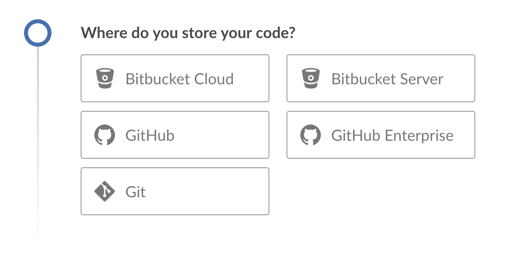

创建流水线
Blue Ocean 能够更容易的在Jenkins中创建一个流水线。
流水线可以由源代码控制中存在的`Jenkinsfile` 生成, 或者使用 Blue Ocean 流水线编辑器 生成一个新的流水线(作为 Jenkinsfile 会提交到源代码控制中)。
配置流水线项目
要在 Blue Ocean中开始配置你的流水线项目, 在 Blue Ocean Dashboard的右上方, 点击 New Pipeline 按钮。

如果你的Jenkins 实例是新生成的或者没有流水线项目或其他的配置项(仪表盘是空的), Blue Ocean显示 Welcome to Jenkins 消息框 ，你可以点击 Create a new Pipeline 按钮来开始配置你的流水线项目。

现在，你要从下面选择一个创建你的流水线项目:
-
GitHub仓库或 GitHub企业
-
Bitbucket Cloud仓库 或 Bitbucket 服务器
Git仓库
要为git仓库创建你的流水线项目， 点击 Where do you store your code?*下的 *Git 按钮。
Where do you store your code" width="70%">
在 Connect to a Git repository 部分, 在*Repository URL*字段输入你的Git仓库的 URL 。

本地仓库
如果你的 URL 是本地目录路径 (比如以一个正斜杠 /`开头
比如/home/cloned-git-repos/my-git-repo.git`),你要继续点击
Create Pipeline 按钮。
之后，Blue Ocean 会扫描你本地仓库的分支来获得 Jenkinsfile，并将为每个包含`Jenkinsfile`的分支运行流水线。 如果
Blue Ocean 找不到任何 Jenkinsfile, 将提示你开始通过流水线编辑器创建一个。
远程仓库
由于流水线编辑器将经过编辑的流水线作为 ``Jenkinsfile`` 保存到 Git 仓库, Blue Ocean 只支持通过SSH协议连接到远程Git仓库。
如果你的 URL 是远程 Git 仓库的路径, 当你开始输入URL时, 你可以从以下两种方式开始:
-
ssh://- 例如ssh://gituser@git-server-url/git-server-repos-group/my-git-repo.git
或 -
user@host:path/to/git/repo.git- 例如gituser@git-server-url:git-server-repos-group/my-git-repo.git,
Blue Ocean 自动生成一个 SSH 公共/私有密钥对 (或提供已存在的一个) 作为你当前/登录的 Jenkins 用户。该凭证自动地注册，为该Jenkins用户提供以下详细信息:
-
Domain:
blueocean-private-key-domain -
ID:
jenkins-generated-ssh-key -
Name:
<jenkins-username> (jenkins-generated-ssh-key)
你要确保 SSH 公共/私有秘钥对在继续之前已经被注册到你的Git服务器。如果没有， 遵循下面的 2 个步骤。否则, 继续。
-
配置这个密钥对的 SSH 公钥组件(你可以从 Blue Ocean界面复制粘贴)，用于远程 Git 服务器的用户账户(比如在机器的`gituser/.ssh`目录的
authorized_keys文件中)。
Note: 该进程允许 Jenkins 用户访问你的Git服务器的用户账户 (比如gituser)能够访问到的仓库。了解更多请参考Pro Git documentation的 Setting Up the Server。 -
完成后, 回到Blue Ocean 界面。
点击*Create Pipeline* 按钮。
之后，Blue Ocean 会扫描过本地仓库的分支来获得 Jenkinsfile
并开始为每个包含 Jenkinsfile`的分支运行流水线。 如果
Blue Ocean 找不到任何 `Jenkinsfile, 将会提示你通过 流水线编辑器开始创建一个。
GitHub仓库
要为gitHuB上的存储库直接创建流水线项目, 点击*Where do you store your code?下的 *GitHub 按钮。
Where do you store your code" width="70%">
在 Connect to GitHub 部分的*Your GitHub access token*字段, 输入你的 GitHub 访问令牌。+ 如果你之前配置过 Blue Ocean，使用个人的访问令牌连接到 GitHub , Blue Ocean 直接带你到下面的 选择 GitHub 账户/组织和存储库步骤。

如果你没有 GitHub 访问令牌, 点击 Create an access key here 链接打开 New personal access token 页面。
创建访问令牌
-
在一个新的选项卡中, 登录 GitHub 账户 (如果需要的话) 并且在 GitHub的 New Personal Access Token 页面,为你的GirHub访问令牌 (e.g.
Blue Ocean)输入一个简短的 Token description。
Note: 访问令牌通常是一个字母数字字符串，它通过你的GitHub 账户对你的GitHub账户访问各种特性和区域的权限进行相应的处理。新的访问令牌过程 (通过上面的 Create an access key here 链接触发) 具有预选的合适权限, Blue Ocean 需要访问你的GitHub账户并与其进行交互。 -
向下滚动直到页面的末尾，然后点击 Generate token。
-
在生成的 Personal access tokens 页面, 复制新生成的访问令牌。
-
回到Blue Ocean, 粘贴访问令牌到 Your GitHub access token*字段并点击 *Connect。
你当前/登陆的Jenkins用户现在可以访问 GitHub a账户 (由你的访问令牌提供), 所以你现在可以 选择 GitHub 账户/组织和存储库。
Jenkins 为Jenkins用户注册了带有以下详细信息的凭证:-
Domain:
blueocean-github-domain -
ID:
github -
Name:
<jenkins-username>/****** (GitHub Access Token)
-
选择 GitHub 账户/组织和存储库
此时, Blue Ocean 提示你选择 GitHub 账户或你所在的组织, 以及它包含的用于构建你流水线项目的存储库
-
在 Which organization does the repository belong to? 部分, 点击:
-
你的 GitHub 账户为你自己的 GitHub 仓库中的或GitHub的其他地方创建流水线项目。
-
你所在的组织为组织内的GitHub仓库创建流水线项目。
-
-
在 Choose a repository 部分, 点击存储库 (在你 GitHub 账户或组织内) ，从而构建你的流水线项目。
Tip:*如果你的仓库的列表很长, 你可以使用 *Search 选项来筛选这个列表。
-
点击 Create Pipeline。
Blue Ocean 将会扫描你本地仓库的分支来获得Jenkinsfile并为每个包含Jenkinsfile的分支运行流水线。 如果Blue Ocean 找不到任何Jenkinsfile, 会提示你通过 流水线编辑器 (通过再次点击 Create Pipeline)创建一个。
Note: U在引擎下, 通过Blue Ocean创建的流水线项目实际上是 "多分支流水线"。因此, Jenkins在你仓库的任何分支中寻找至少一个Jenkinsfile 。
Bitbucket Cloud的存储库
为了直接在Bitbucket Cloud上为Git 或 Mercurial 存储库创建流水线项目, 点击 Where do you store your code?*的*Bitbucket Cloud 按钮
Where do you store your code" width="70%">
在*Connect to Bitbucket* 部分的*Username* 和 *Password*字段, 分别输入 Bitbucket 邮箱地址和密码。注意:
-
如果你之前配置过 Blue Ocean，使用你的email地址和密码连接到Bitbucket , Blue Ocean就会直接将你带到下面的 选择Bitbucket 账户/团队和存储库步骤。
-
如果你输入这些凭证, Jenkins就会为Jenkins用户使用下面的信息进行注册:
-
Domain:
blueocean-bitbucket-cloud-domain -
ID:
bitbucket-cloud -
Name:
<bitbucket-user@email.address>/****** (Bitbucket server credentials)
-

点击 Connect，你当前/登陆的Jenkins用户将会访问 你的Bitbucket 账户。现在，你可以 选择Bitbucket 账户/团队和存储库。
选择 Bitbucket 账户/团队和仓库
在这里, Blue Ocean提示你选择 Bitbucket 账户或你所在的团队, 以及它包含的构建你的流水线项目的仓库。
-
在*Which team does the repository belong to?* 部分, 点击:
-
Bitbucket 账户为你的或从Bitbucket的其他地方fork的 Bitbucket 仓库创建流水线项目。
-
你所在的团队为该团队内的仓库创建流水线项目。
-
-
在 Choose a repository 部分, 点击存储库 (在你的 Bitbucket 账户或团队中) 来构建你的流水线项目。
Tip: 如过你的仓库列表太长,你可以使用 Search 选项过滤该列表。 -
点击 Create Pipeline。
Blue Ocean就会扫描你本地仓库的分支来获取Jenkinsfile， 并为每一个含有Jenkinsfile的分支开始运行流水线。 如果Blue Ocean找不到任何Jenkinsfile, 会提示你 通过 流水线编辑器 (通过再次点击 Create Pipeline )创建一个。+ Note: 在引擎下, 通过 Blue Ocean创建的流水线项目实际上是 "多分支流水线"。因此, Jenkins 在存储库的任何分支中寻找至少一个Jenkinsfile。